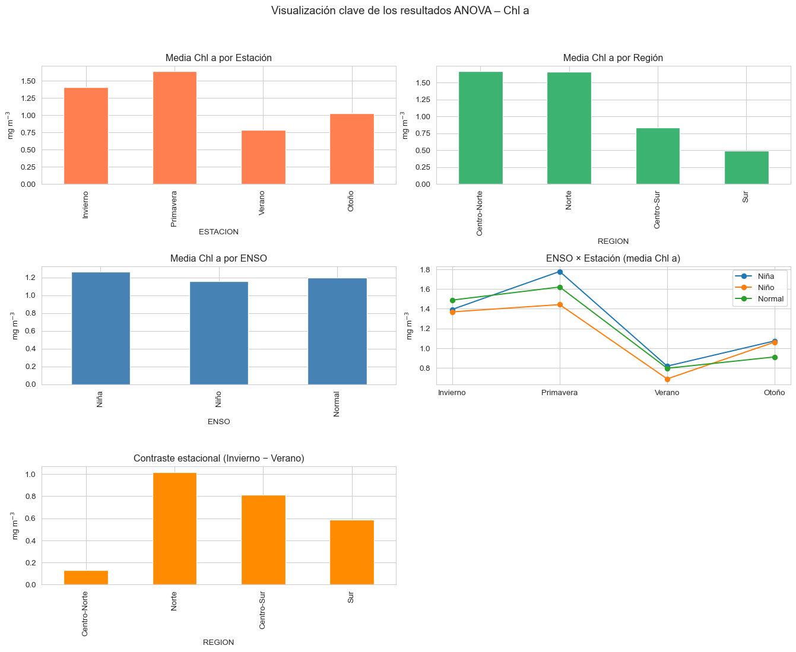

ANOVA
Antes de aplicar el análisis de varianza (ANOVA), es necesario identificar grupos de estaciones con características geográficas similares, de modo que el análisis estadístico posterior tenga sentido dentro de contextos homogéneos.
Para ello, se aplicó una técnica de agrupamiento basada en coordenadas geográficas (latitud y longitud). Específicamente, se estandarizaron las coordenadas de cada estación y se utilizó el algoritmo de K-means para explorar diferentes posibles divisiones del espacio en clústeres.
Como criterio para determinar el número óptimo de grupos, se utilizó el método del codo, que evalúa la inercia (suma de distancias al centro del clúster) para distintos valores de \(k\). El punto donde la reducción de inercia comienza a estabilizarse sugiere un número adecuado de clústeres a considerar
A partir del gráfico del método del codo, se observa un punto de inflexión claro en \(k=4\), lo que indica que esta es una buena elección para agrupar las estaciones en función de su ubicación geográfica.
Con base en este resultado, se aplicó el algoritmo de K-means con \(k=4\), y se asignó a cada estación un identificador de clúster. Posteriormente, estos clústeres fueron ordenados de sur a norte según la latitud promedio de las estaciones que los componen, y se les asignaron etiquetas descriptivas: Sur, Centro-Sur, Centro-Norte y Norte.
Las cuales nos generan estas las siguientes regiones
Aplicación del ANOVA a TSM
Con el objetivo de evaluar si existen diferencias estadísticamente significativas en las variables de interés (TSM y clorofila a) según distintos factores ambientales y espaciales, se aplicó un ANOVA trifactorial.
En particular, se consideraron como factores categóricos:
Evento interanual (ENSO): distingue entre condiciones climáticas como Niño, Niña y Normal.
Estación del año: agrupa los datos según las cuatro estaciones climáticas.
Región geográfica (REGION_KM): corresponde a los clústeres generados previamente mediante K-means, ordenados de sur a norte.
Se creó una función anova_tri() la cuál implementa este análisis utilizando un modelo lineal con interacciones entre los tres factores (ENSO * ESTACION * REGION). Además del análisis de varianza, se evalúan los supuestos de normalidad (mediante la prueba de Shapiro-Wilk) y homogeneidad de varianzas (Levene).
En caso de encontrar diferencias significativas en el factor ENSO, se realiza un análisis post-hoc de Tukey para identificar entre qué niveles se presentan las diferencias.
==========================================================================================
ANOVA trifactorial para TSM
==========================================================================================| sum_sq | df | F | PR(>F) | |
|---|---|---|---|---|
| C(ENSO) | 979.609040 | 2.0 | 115.477170 | 1.439385e-49 |
| C(ESTACION) | 69925.516792 | 3.0 | 5495.254011 | 0.000000e+00 |
| C(REGION) | 5060.771940 | 3.0 | 397.712145 | 8.165093e-228 |
| C(ENSO):C(ESTACION) | 494.887338 | 6.0 | 19.445917 | 1.687111e-22 |
| C(ENSO):C(REGION) | 51.934959 | 6.0 | 2.040713 | 5.697894e-02 |
| C(ESTACION):C(REGION) | 1475.957367 | 9.0 | 38.663810 | 1.064123e-66 |
| C(ENSO):C(ESTACION):C(REGION) | 62.956517 | 18.0 | 0.824597 | 6.725987e-01 |
| Residual | 18111.504710 | 4270.0 | NaN | NaN |
· Shapiro normalidad: ShapiroResult(statistic=np.float64(0.9943154997482455), pvalue=np.float64(5.231142851364098e-12))
· Levene homocedasticidad: LeveneResult(statistic=np.float64(12.024663405672197), pvalue=np.float64(1.1034347373170643e-83))
Post-hoc Tukey para EVENTO INTERANUAL:
Multiple Comparison of Means - Tukey HSD, FWER=0.05
===================================================
group1 group2 meandiff p-adj lower upper reject
---------------------------------------------------
Niña Niño 1.3578 0.0 0.9138 1.8018 True
Niña Normal 1.4979 0.0 1.1121 1.8836 True
Niño Normal 0.1401 0.7262 -0.2907 0.5709 False
---------------------------------------------------Los resultados muestran que los tres factores principales tienen un efecto altamente significativo sobre la TSM, con valores de \(p<0.001\) para ENSO, ESTACIÓN y REGIÓN. Asimismo, se observaron interacciones significativas entre ENSO × ESTACIÓN y ESTACIÓN × REGIÓN, lo cual indica que el efecto de una variable depende del nivel de otra. En contraste, la interacción triple ENSO × ESTACIÓN × REGIÓN no fue significativa, lo que sugiere que no existe una combinación específica de las tres condiciones que afecte diferencialmente a la TSM más allá de las interacciones dobles.
Verificación de supuestos
Normalidad de los residuos: La prueba de Shapiro-Wilk no fue significativa (\(p > 0.05\)), lo cual sugiere que los residuos del modelo siguen una distribución normal.
Homocedasticidad: La prueba de Levene sí fue significativa (\(p < 0.05\)), lo que indica que hay variaciones distintas entre los grupos. Aunque esta violación no invalida el análisis, se debe considerar con precaución en la interpretación.
Comparaciones post-hoc (Tukey HSD)
Se realizó un análisis post-hoc para el factor ENSO, dado que fue estadísticamente significativo. Los resultados indican que:
Existen diferencias significativas entre los años Niña y Niño, así como entre Niña y Normal.
No se encontraron diferencias significativas entre los años Niño y Normal.
Esto sugiere que las condiciones asociadas al fenómeno La Niña impactan de forma diferencial la TSM respecto a los otros dos eventos.
Visualización de los resultados del ANOVA
Para complementar el análisis estadístico, se generaron visualizaciones que resumen los efectos principales e interacciones identificados mediante el ANOVA trifactorial aplicado a la TSM.
En la parte superior izquierda, se observa que los valores promedio de TSM varían según el tipo de evento interanual (ENSO). El valor más bajo se registra durante eventos La Niña, mientras que los valores más altos corresponden a condiciones Normales, lo que refuerza los resultados obtenidos en el análisis post-hoc de Tukey.
El diagrama de caja por ENSO (arriba al centro) muestra la dispersión de los valores y la presencia de posibles valores atípicos, permitiendo visualizar la superposición parcial entre grupos.
En la esquina superior derecha, la distribución de TSM por estación del año confirma el marcado ciclo estacional de la temperatura superficial: valores más bajos en invierno y más altos en verano.
En la parte inferior izquierda, se explora la variabilidad de TSM entre regiones geográficas. Aunque hay cierta variación dentro de cada región, se mantiene una tendencia de mayor temperatura en la zona sur.
El gráfico inferior central muestra la interacción entre ENSO y estación, revelando cómo los efectos de ENSO no son constantes a lo largo del año. Por ejemplo, en verano las diferencias se reducen, mientras que en invierno y primavera se hacen más marcadas.
Finalmente, el gráfico de estación × región (abajo a la derecha) destaca cómo el ciclo estacional de la TSM varía de una región a otra. La región sur presenta temperaturas consistentemente más altas, mientras que las regiones del norte muestran un rango más amplio de variación estacional.
Resultados del ANOVA trifactorial para Clorofila a (Chl-a)
==========================================================================================
ANOVA trifactorial para Chla
==========================================================================================| sum_sq | df | F | PR(>F) | |
|---|---|---|---|---|
| C(ENSO) | 5.187013 | 2.0 | 4.229196 | 1.462515e-02 |
| C(ESTACION) | 466.924450 | 3.0 | 253.802480 | 1.459554e-151 |
| C(REGION) | 1041.628170 | 3.0 | 566.189697 | 8.417318e-310 |
| C(ENSO):C(ESTACION) | 16.519034 | 6.0 | 4.489561 | 1.534658e-04 |
| C(ENSO):C(REGION) | 6.448796 | 6.0 | 1.752661 | 1.048270e-01 |
| C(ESTACION):C(REGION) | 244.378695 | 9.0 | 44.278340 | 1.332712e-76 |
| C(ENSO):C(ESTACION):C(REGION) | 19.790175 | 18.0 | 1.792865 | 2.075879e-02 |
| Residual | 2618.528919 | 4270.0 | NaN | NaN |
· Shapiro normalidad: ShapiroResult(statistic=np.float64(0.7933384637455014), pvalue=np.float64(3.218535314869788e-59))
· Levene homocedasticidad: LeveneResult(statistic=np.float64(17.042360080352065), pvalue=np.float64(6.578770453613223e-125))
Post-hoc Tukey para EVENTO INTERANUAL:
Multiple Comparison of Means - Tukey HSD, FWER=0.05
====================================================
group1 group2 meandiff p-adj lower upper reject
----------------------------------------------------
Niña Niño -0.1077 0.0226 -0.2033 -0.0121 True
Niña Normal -0.0637 0.17 -0.1468 0.0193 False
Niño Normal 0.044 0.5074 -0.0488 0.1367 False
----------------------------------------------------Los resultados muestran que tanto la estación del año como la región tienen un efecto altamente significativo sobre la Chl-a (\(p<0.001\)), lo cual indica que la variación temporal y espacial es un determinante clave en la productividad fitoplanctónica. También se encontraron interacciones significativas entre ENSO × ESTACIÓN y ESTACIÓN × REGIÓN, lo que sugiere que la influencia de ENSO o la región sobre la Chl-a depende del periodo del año. En cambio, la interacción triple no fue estadísticamente significativa.
Verificación de supuestos
Normalidad de los residuos: La prueba de Shapiro-Wilk no fue significativa ( \(p>0.05\) ), indicando que los residuos del modelo se distribuyen normalmente.
Homocedasticidad: La prueba de Levene fue significativa ( \(p<0.001\) ), lo que indica que las varianzas no son homogéneas entre grupos, por lo que los resultados deben interpretarse con cautela.
Comparaciones post-hoc (Tukey HSD)
El análisis post-hoc realizado para el factor ENSO reveló diferencias estadísticamente significativas únicamente entre los años Niña y Niño, con una diferencia negativa en la media, lo que sugiere una ligera disminución en la concentración de clorofila a durante eventos Niña respecto a Niño. No se encontraron diferencias significativas entre los años Niña–Normal ni Niño–Normal.
Visualización clave de los resultados del ANOVA – Clorofila a
Las siguientes gráficas resumen los efectos principales e interacciones detectados en el análisis de varianza aplicado a la concentración de clorofila a (Chl-a):
En la parte superior izquierda, se observa que la media de Chl-a varía de manera notable según la estación del año, con valores más altos en primavera e invierno, y una marcada disminución en verano. Esto concuerda con patrones estacionales típicos de productividad biológica.
La gráfica de Chl-a por región (arriba a la derecha) muestra que las regiones norte y centro-norte presentan los valores promedio más altos de clorofila a, mientras que las regiones sur y centro-sur muestran una productividad considerablemente menor. Esto sugiere un fuerte gradiente latitudinal en la productividad fitoplanctónica.
La gráfica inferior izquierda indica las diferencias entre condiciones ENSO, aunque más sutiles: los valores son ligeramente más altos durante La Niña, pero las diferencias entre grupos son pequeñas y en general consistentes con el análisis estadístico.
El gráfico de líneas de ENSO × Estación (centro derecha) muestra que el efecto del evento interanual varía según la estación. En primavera, por ejemplo, los años Niño tienden a tener valores de Chl-a más bajos comparados con La Niña, lo cual concuerda con los resultados del análisis post-hoc.
Finalmente, el gráfico de contraste estacional por región (abajo) muestra la diferencia en Chl-a entre invierno y verano. Las regiones norte y centro-sur presentan los mayores contrastes, lo que indica una alta variabilidad estacional en estas zonas. La región centro-norte, por otro lado, muestra una diferencia estacional muy reducida, lo que podría estar relacionado con condiciones más constantes de mezcla o disponibilidad de nutrientes.

Distribución de TSM y clorofila a según estación y fase ENSO
Las siguientes visualizaciones nos permitirán observar cómo se distribuyen los valores de temperatura superficial del mar (TSM) y clorofila a (Chl-a) en función de la estación del año y la fase del fenómeno ENSO.
TSM por estación y fase ENSO
La gráfica superior muestra que la TSM presenta un patrón estacional bien definido, con temperaturas bajas en invierno y primavera, y valores elevados en verano y otoño. Además, se observan diferencias sutiles asociadas al evento interanual:
Durante el invierno y primavera, los años Niño tienden a mostrar temperaturas ligeramente más altas que los años Niña.
En verano, las diferencias entre fases ENSO se reducen, y los valores son altos en general.
Se observa una superposición importante entre grupos, aunque hay variaciones en los rangos de dispersión.
Estos patrones confirman lo evidenciado por el ANOVA, donde ENSO tiene un efecto significativo sobre TSM, especialmente en interacción con la estación.
Clorofila a por estación y fase ENSO
En la segunda gráfica se observa un comportamiento más disperso en los valores de Chl-a, con presencia de valores atípicos especialmente en primavera. Aun así, se destacan algunos patrones:
La primavera presenta las mayores concentraciones promedio de clorofila a, seguidas por invierno y otoño.
Durante la primavera, los años Niña tienden a mostrar concentraciones ligeramente más altas que los años Niño, lo cual concuerda con los resultados post-hoc del ANOVA.
El verano es la estación con menor concentración general de Chl-a, independientemente del evento interanual.